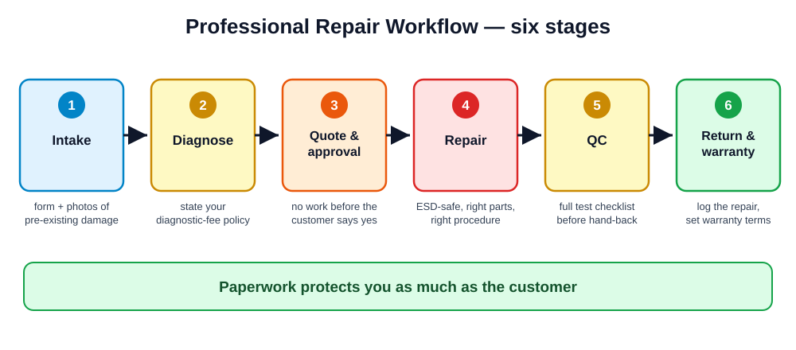

You can fix phones. Today: how to get paid for it — and earn your certificate.
Day 5 of 5 · afternoon block · theory + final exams
Set the tone: this is the last teaching session before the exams. Congratulate them on getting here, then be blunt: most of them plan to earn with this skill, and this module decides whether the skill turns into income. Outline today's shape: 2 h business theory, exam briefing, then the finals.
resources/videos.mdPlay Video 10.1 as the opener. Then ask: "Name a good tradesperson you know who is always broke." Everyone knows one. Skill gets the phone fixed; the intake form, the quote, and the warranty log get you paid and keep you out of trouble. That's today.

Walk the six stages: intake → diagnose → quote & approve → repair → QC → return & warranty. Key discipline: no stage is skipped, ever — especially "quote & approve": no work starts before the customer says yes to a price. Every walk-in follows this same path, whether it's a two-minute fix or a board job.
The scratch you didn't document becomes the scratch you made. Photos at intake cost 30 seconds; the argument later costs a customer — or a lawsuit.
Show your sample intake form on the projector. Roleplay the awkward moment: customer at pickup says "that dent wasn't there before." With timestamped intake photos the conversation takes ten seconds. Without them, you lose either the argument or the customer — usually both. Also note the intake form carries the data-loss consent line from Module 9.
= free skilled work for price-shoppers who take your diagnosis to the cheaper shop next door.
Charge a diagnosis fee — and credit it against the repair if they proceed. Serious customers pay nothing extra; tire-kickers pay for your time.
Say it up front: "Diagnosis is X. If you go ahead with the repair, it comes off the price."
This policy filters customers fairly: nobody serious ever objects, because they pay nothing extra. Connect to Module 8's water-damage fee — same principle, and water damage is where free diagnosis hurts most (hours of treatment work). Let students debate it briefly; someone will argue free diagnosis attracts customers. Answer: it attracts the wrong ones.
Price = Part + Labor (rate × hours) + Margin
| Screen job example | Amount |
|---|---|
| Part: quality aftermarket screen (incl. shipping) | $25 |
| Labor: 1 h at $20/h shop rate | $20 |
| Margin: parts risk, warranty risk, consumables (~30%) | $15 |
| Customer price | $60 |
Set a minimum charge — even a "two-minute fix" carries your rent, tools, training, and risk. Never work for less than your minimum.
Work the example live and let the class push back on the margin line — that's the one beginners cut first, and it's what pays for warranty returns and dead-on-arrival parts. Homework preview: they'll price three jobs with local part prices. Adjust the dollar figures to your local market on the whiteboard; the structure is what's graded.
resources/videos.mdPlay Video 10.3. War story to tell: a batch of ultra-cheap screens with bad touch layers generates five warranty returns — the "savings" cost double in labor and reputation. Rule: never switch a whole product line to a new supplier on one good sample; buy five, sell five, then commit.
| Date | Device | IMEI | Fault | Work done | Parts | Price | Warranty end |
|---|---|---|---|---|---|---|---|
| 07-07 | Galaxy A54 | 35…901 | Cracked screen | Screen replaced | SCR-A54-PA | $60 | 10-07 |
Records feel optional until the first dispute ("you never fixed my phone!" — row 47 says otherwise, with the IMEI) or the first tax question. The warranty claims log is the hidden gem: three returns of the same screen SKU = drop that supplier, backed by data instead of a feeling.
The pre-repair conversation is where five-star reviews are made. Surprises — even small ones — are where one-star reviews are made.
Callback to Module 8's script — same principle generalized: every hard truth costs less BEFORE the repair. Aftermarket screens example: tell them brightness/colors may differ slightly and offer the original-quality option at the higher price. Customers rarely pick it, but having been offered it, they can't feel deceived.
"I've opened it up and found [X]. That changes the price/outlook to [Y]. You approved [Z], so nothing happens until you decide. Here are your options…"
resources/videos.mdPlay Video 10.2, then roleplay both columns: (1) mid-repair discovery — the screen job reveals a swollen battery, deliver the extra-cost call; (2) an angry customer whose replaced screen died in week two. Model the calm version: "You're covered — leave it with me, it's my priority." A defused complaint becomes your loudest promoter; a fought one becomes a one-star review with your name in it.
Make it personal: "Would you hand YOUR unlocked phone to a stranger who might scroll your gallery?" That's what every customer does at the counter. Concrete policies: test cameras against the bench wall, not by opening their photo app history; passcodes on the work ticket only, shredded at pickup. Real shops have been destroyed by one screenshot of a tech browsing a customer's photos.
Demo an IMEI blacklist check live (dial *#06# for the IMEI, then a checker site). Handling stolen goods can be a crime even if you claim ignorance — the red flags on screen are what "should have known" looks like to a court. E-waste: point at the classroom battery bin one more time; find your local battery/board recycler before opening shop.
Your marketing budget for year one: $0 and the discipline to ask for a review at every pickup.
Have everyone search "phone repair near me" on their own phones right now — the map results ARE the market. Note who's on top and their review counts: that's the game. Script the ask: "If you're happy with it, a Google review really helps a small shop — here's the QR code." Asking at the moment of the fixed phone in hand converts best.
assessments/final-written-exam.md — counts for 20% of your final gradeBankers for revision: the 8 safety rules, ESD discipline, screen/battery/port procedures, water-damage protocol and the rice myth, Recovery vs DFU, activation-lock ethics, the pricing formula.
State the logistics precisely: duration, timing today, and that phones go in bags during the written paper. The revision list on this slide is genuinely the high-weight material — say so plainly; this is an exam briefing, not a trick. Safety or ethics answers that endorse dangerous/illegal practice can fail the paper regardless of other marks.
| Station | Task | Core skills |
|---|---|---|
| 1 | Full screen replacement on an assigned phone | Modules 1, 3, 4 |
| 2 | Battery replacement + health verification | Modules 1, 5 |
| 3 | Mystery-fault diagnosis (hardware or software) | Modules 6, 9 |
| 4 | Water-damage triage & treatment plan | Module 8 |
| 5 | Customer roleplay: intake, quote & expectation-setting | Module 10 |
Details: assessments/final-practical-exam.md · worksheet: practicals/practical-10-final-exam.md · counts for 30%
Explain the rotation and timing per station. Station 5 surprises people — a perfect solder joint won't save a tech who can't take an intake or quote a price, so the customer roleplay is graded with the same weight. Emphasize: examiners watch the PROCESS, not just the result (next slide).
Demystify grading completely — nervous students perform worse than they are. Key reassurances: narrating your work is welcomed ("I'm disconnecting the battery first because…") and asking for a permitted reference (screw map, flowchart poster) is process, not weakness. A stuck screw handled correctly scores BETTER than a lucky rush job.
| Component | Weight |
|---|---|
| Module quizzes (10 × 10 questions) | 20% |
| Practical lab rubrics | 30% |
| Final written exam | 20% |
| Final practical exam | 30% |
Certificate = 70% overall + pass the final practical + ≥ 80% attendance
Answer the inevitable questions now: quiz and lab marks are already banked — students can estimate where they stand before the finals. Explain the retake policy for anyone who narrowly misses (per certification-checklist.md). Certificates issue via assessments/certification-checklist.md once all three conditions are verified.
Class: listen for anything missed — you're the reviewers. Last one — make it count.
This is the final teach-back of the course — let it run a little longer and let the class do the correcting; they know enough now. #3 should produce: IMEI blacklist check, activation lock = walk away, ID requirement. If it does, your ethics teaching stuck. Then move straight into exam logistics.
| Block | Activity |
|---|---|
| 1 | Written exam — assessments/final-written-exam.md, closed book |
| 2 | Practical stations 1–5 in rotation — practicals/practical-10-final-exam.md |
| 3 | Bench inspection & paperwork check (intake forms, logs from your stations) |
| 4 | Results review, retake scheduling if needed, certificates |
Grading: assessments/final-practical-exam.md rubrics + assessments/certification-checklist.md
This is the practical-stations slide for exam day — post it on the wall during the rotation. Assign starting stations now to avoid bottlenecks (5 stations, pairs stagger). Remind them the bench inspection in block 3 is graded exactly like every module: mapped screws, clean mat, strap hung up. Nothing on exam day is new — that's the point.
Then: show us what you can do.
If the exams run on a later day, this is their homework; if the finals are this afternoon, compress it into a 15-minute guided revision break — safety rules recital in pairs, one workflow walk-through, then stations. Either way, end the briefing on confidence: "Everything on the exam, you have already done with your own hands."
Five days ago this was a sealed black box. Now it's your trade.
Fix well. Charge fairly. Document everything.
Show this slide AFTER results are in — it's the send-off. Hand out certificates individually, name each student's strongest moment from the course (keep brief notes during the finals so this is specific, not generic). Photo with permission for the class — and point out that's their first "with permission" marketing photo. Final words: the fault journal habit separates techs who plateau from techs who compound.